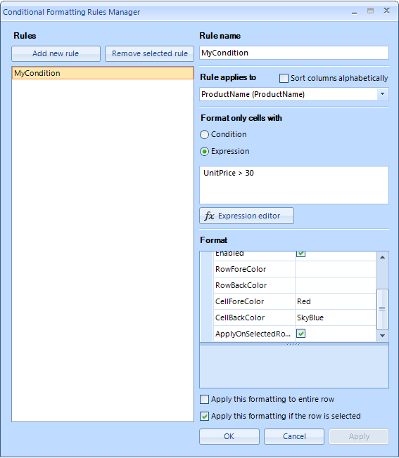

Conditional Formatting Cells
Cells and rows can be styled based on data conditions using ConditionalFormattingObjects.
The formatting objects could contain the following formatting properties for cell, row, and text alignment:
CellBackColor – sets the background color of the cell
CellForeColor – sets the cell text color
CellFont – sets the font of the cell.
TextAlignment – sets the alignment of the cell text
RowBackColor – sets the background color for the entire row that the cell appears in
RowForeColor – sets the cell text color for the entire row that the cell appears in
RowFont – sets the font of the row’s cells text.
RowTextAlignment – sets the alignment of the row’s cells text.
The formatting properties of the rows apply if the ApplyToRow property
of the formatting object is set to ‘true’.
The ApplyOnSelectedRows property defines if the formatting properties
of the object will apply also to the selected rows.
The formatting objects are two different types depending on the mechanism for defining conditions
– rule based and expression based.
Rule based formatting objects
The rule based formatting objects apply to the cells / rows according to the defined rules:
ConditionType– sets conditions like Equal,
Contains, etc.TValue1 – a string representing the first value used to test the condition
TValue2 – a string representing the second value used to test the condition.
The example below detects when a value in the second column
"UnitPrice" has a value greater than 30.
When the condition is met the cell background color is set to SkyBlue,
the text color is set to Red and the text alignment is set to
MiddleRight.
[C#] Rule based formatting objects
ConditionalFormattingObject obj = new ConditionalFormattingObject("MyCondition", ConditionTypes.Greater, "30", "", false);
obj.CellBackColor = Color.SkyBlue;
obj.CellForeColor = Color.Red;
obj.TextAlignment = ContentAlignment.MiddleRight;
this.radGridView1.Columns["UnitPrice"].ConditionalFormattingObjectList.Add(obj);
[VB.NET] Rule based formatting objects
Dim obj As New ConditionalFormattingObject("MyCondition", ConditionTypes.Greater, "30", "", False)
obj.CellBackColor = Color.SkyBlue
obj.CellForeColor = Color.Red
obj.TextAlignment = ContentAlignment.MiddleRight
Me.RadGridView1.Columns("UnitPrice").ConditionalFormattingObjectList.Add(obj)

Expression based formatting objects
The expression based formatting objects apply to the cells / rows according to the
defined Expression. It provides high flexibility to the
formatting mechanism. The Expression could refer to data
from more than one column. Its result should be boolean.
The example below detects when a value in the second column "UnitPrice"
has a value greater than 30 and sets styles to the “ProductName” column.
[C#] Expression based formatting objects
ExpressionFormattingObject obj = new ExpressionFormattingObject("MyCondition", "UnitPrice > 30", false);
obj.CellBackColor = Color.SkyBlue;
obj.CellForeColor = Color.Red;
this.radGridView1.Columns["ProductName"].ConditionalFormattingObjectList.Add(obj);
[VB.NET] Expression based formatting objects
Dim obj As New ExpressionFormattingObject("MyCondition", "UnitPrice > 30", False)
obj.CellBackColor = Color.SkyBlue
obj.CellForeColor = Color.Red
Me.RadGridView1.Columns("ProductName").ConditionalFormattingObjectList.Add(obj)

Customize ConditionalFormattingForm
RadGridView provides convenient form which the end user could use to create formatting objects:
To access and customize the dialog, you can use the ConditionalFormattingFormShown event of RadGridView. For example, here is
how to disallow displaying of non-visible columns in the drop down and also, specify the format of displaying the columns as name and header text:
[C#] Expression based formatting objects
ExpressionFormattingObject obj = new ExpressionFormattingObject("MyCondition", "UnitPrice > 30", false);
obj.CellBackColor = Color.SkyBlue;
obj.CellForeColor = Color.Red;
this.radGridView1.Columns["ProductName"].ConditionalFormattingObjectList.Add(obj);
[VB.NET] Expression based formatting objects
Dim obj As New ExpressionFormattingObject("MyCondition", "UnitPrice > 30", False)
obj.CellBackColor = Color.SkyBlue
obj.CellForeColor = Color.Red
Me.RadGridView1.Columns("ProductName").ConditionalFormattingObjectList.Add(obj)